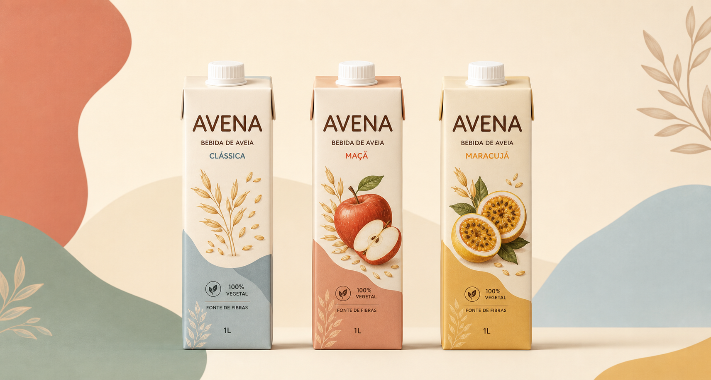
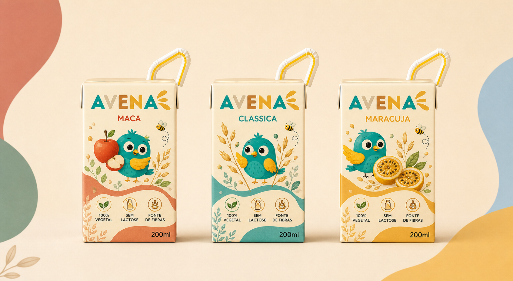

Bebida vegetal de aveia
Nutritiva para a rotina. Bonita para conquistar.
Avena une sabor suave, praticidade e sustentabilidade em uma linha pensada para adultos, crianças e consumidores que querem escolhas melhores no dia a dia.

Mercado
O público já procura saúde, praticidade e bebidas vegetais.
Produto
As caixinhas mini também viram parte da identidade.

Maçã
Doce na medida, divertida e perfeita para o público infantil.
Clássica
Leve, versátil e fácil de combinar com a rotina.
Maracujá
Tropical, vibrante e cheia de personalidade.
Diferenciais
Por que a Avena faz sentido agora.
Sabor em primeiro lugar
A pesquisa mostrou que sabor e preço justo são decisivos para a compra.
Sem adição de açúcar
70% dos entrevistados valorizam essa informação no rótulo.
Marca para famílias
Há espaço para opções vegetais acessíveis também para o público infantil.
Impacto positivo
A proposta acompanha consumidores atentos a sustentabilidade real.
Público
Duas personas, a mesma busca por escolhas melhores.
Mãe prática
Classe média alta, trabalha em home office e procura lanches nutritivos, confiáveis e fáceis para os filhos.
Jovem consciente
Valoriza bem-estar, sustentabilidade, bom sabor e alternativas acessíveis para a rotina.
Pesquisa
Os dados apontam para uma oportunidade clara.
acharam atraente a ideia de uma bebida à base de aveia
consideram importante o selo "sem adição de açúcar"
foi o critério mais importante na decisão de compra
Estratégia
Uma marca escolarmente bem pensada, comercialmente coerente.
Proposta de valor
Bebidas vegetais saborosas, nutritivas, acessíveis e com embalagens modernas.
Canais
Supermercados, farmácias, cafeterias, escolas, e-commerce e marketplaces.
Relacionamento
Redes sociais, WhatsApp, atendimento próximo e programas de fidelidade.
Receita
Venda das linhas adulto e kids, com possibilidade de assinaturas mensais.
Viabilidade